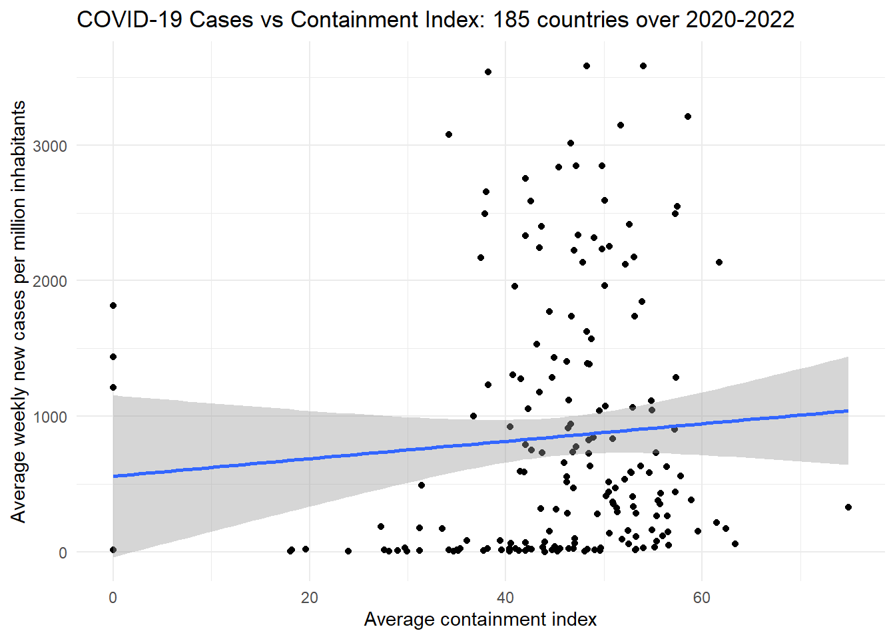

# install.packages("tidyverse")
# install.packages("corrr")
library(tidyverse)
library(corrr)SCIBIOM303 Mechanisms of Disease
Spring 2024
Introduction
In this project we investigate the relationship between COVID-19 cases and the Stringency index of COVID regulations in different countries by making a scatter plot and calculating the correlation between the two variables.
The R script from the workshop is also available on GitHub.
The first step of making the map is to (install and) load the required libraries.
Data
We need to load the data for the stringency index per country, together with the number of COVID-19 cases and the total population of each country.
First we load and tidy the data for stringency.
The data for the stringency was obtained from Our World in Data. You can load the data directly from the link below, therefore you don’t need to download the file.
The raw data has observations for every day, so to get a single number per country, we group the data by country and calculate the mean stringency index within each country.
# load the data for the stringency index and assign it to the object containment
containment <- read_csv("https://github.com/ucrdatacenter/projects/raw/main/SCIBIOM303/2024h1/covid-containment-and-health-index.csv") |>
# group the data by country code
group_by(Code) |>
# calculate the mean stringency index per country
summarise(avg_containment = mean(containment_index, na.rm = TRUE))The data for the number of COVID cases are also from Our World in Data.
# load the data for the number of COVID cases and assign it to the object covid
covid <- read_csv("https://github.com/ucrdatacenter/projects/raw/main/SCIBIOM303/2024h1/owid-covid-data.csv")The covid dataset reports the number of COVID cases (and many other variables) every week, so to get a single number of total cases per country, we sum up the weekly new cases per country.
To add the stringency measure for each country next to the COVID cases, we join the data together using the inner_join function. This function takes two dataframes and joins them together based on a common column, in this case Code.
# create a new dataframe merged_data that contains both variables
merged_data <- covid |>
# rename the column iso_code to Code
rename(Code = iso_code) |>
# group the data by country code
group_by(Code) |>
# calculate the mean number of new cases per million people per country
summarise(avg_new_cases_per_million = mean(new_cases_per_million, na.rm = TRUE)) |>
# join the data with the containment data
inner_join(containment, by = "Code")Scatterplot and correlation
We can make a scatter plot of the relationship between the stringency index and the number of COVID cases per million people to visualize the relationship. We add a linear regression line to the scatter plot to see the trend more clearly and customize the axis labels and theme.
merged_data |>
# define a plot with the containment index on the x-axis and the number of new cases per million on the y-axis
ggplot(aes(x = avg_containment, y = avg_new_cases_per_million)) +
# add points for each country
geom_point() +
# add a linear regression line
geom_smooth(method="lm") +
# add labels to the axes and a title
labs(title = "COVID-19 Cases vs Containment Index: 185 countries over 2020-2022",
y = "Average weekly new cases per million inhabitants",
x = "Average containment index") +
# customize the theme
theme_minimal()
Finally, we calculate the correlation matrix between the variables.
# calculate the correlation matrix
merged_data |>
correlate()# A tibble: 2 × 3
term avg_new_cases_per_million avg_containment
<chr> <dbl> <dbl>
1 avg_new_cases_per_million NA 0.0741
2 avg_containment 0.0741 NA